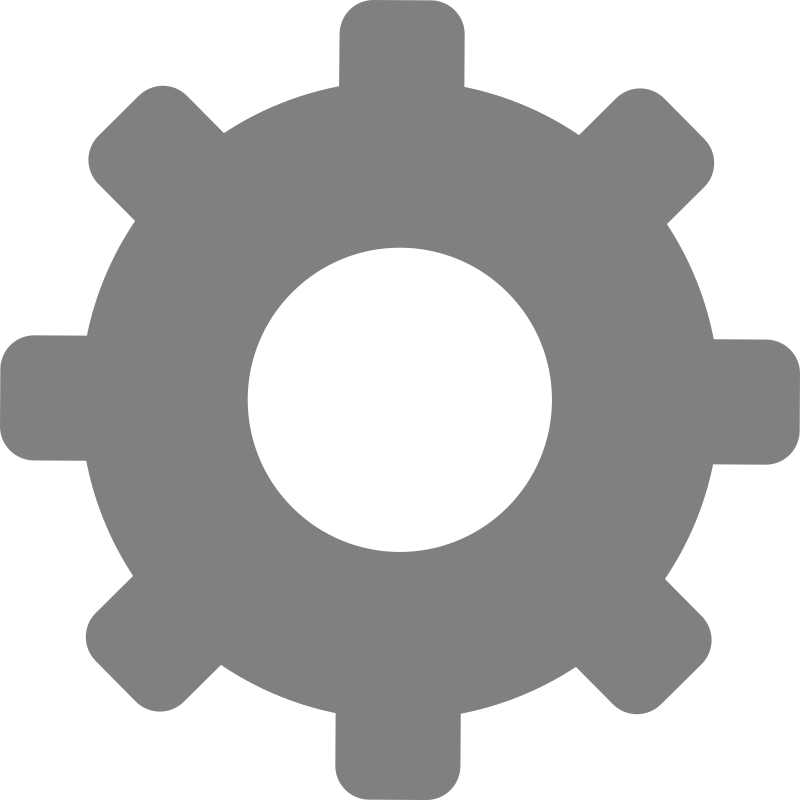
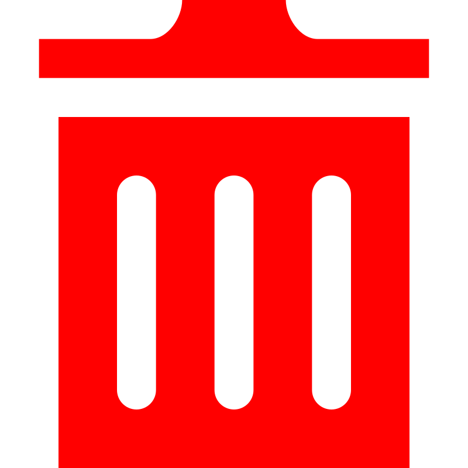

Масштаб сітки:
▼
Ширина лінії чотирикутника:
Радіус вершин чотирикутника:
Довжина осей:
Відображення довжин та
градусних мір кутів
Застосувати налаштування
Вимкнути режим редагування точок
Побудувати мін. чотирикутник
